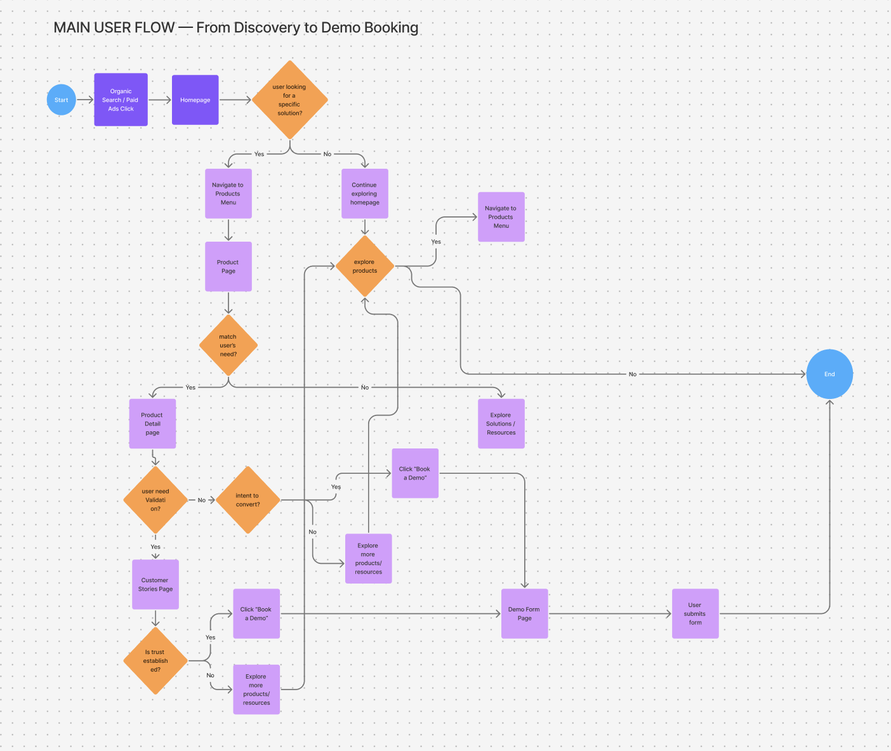
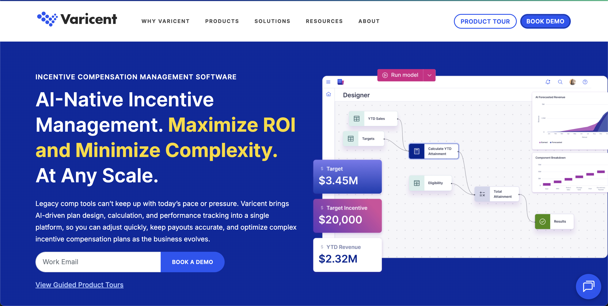

VARICENT
At Varicent, I worked as a hybrid UX Designer and Frontend Developer within the marketing team, where the company website served as the primary user-facing experience. The website supported product discovery, education, and lead generation, with a core objective of guiding users toward booking a product demo.
My work focused on designing clear, accessible web experiences and actively writing the code to bring those designs to life. This included designing, coding, and refining website pages, expanding subdomains, and developing custom templates and modules directly within the HubSpot CMS environment.
Understand → Explore → Structure → Design → Validate → Iterate
My process emphasized early exploration using low-fidelity work, clear navigation flows, and iterative improvements informed by user behavior and analytics. As the website evolved with new campaigns and content, several UX challenges emerged:
- Pages became increasingly content-heavy.
- Users arrived with different levels of intent and understanding.
- Navigation and CTA placement lacked consistency across pages.
The key challenge was to guide users toward the “Book a Demo” action without interrupting exploration or overwhelming users early in their journey.
The primary objective was to help users reach a demo booking decision point in a way that felt natural, contextual, and user-centered. This required supporting exploratory users who needed clarity and trust, maintaining visibility of the demo CTA for high-intent users, and reducing friction in the path to booking.
My Contributions:
- Designing page structures, layouts, and UI components.
- Writing custom code to build and deploy pages, blogs, and marketing assets directly within HubSpot CMS.
- Creating low-fidelity wireframes to validate hierarchy.
- Applying accessibility principles (WCAG) across both visual layouts and frontend code.
- Mapping user flows to guide content and interactions.
- Iterating designs using insights from Hotjar, VWO, and GA4.

Early low-fidelity wireframes were used to explore content hierarchy, navigation clarity, and placement of the “Book a Demo” CTA. Design decisions focused on:
- Progressive disclosure: Introducing CTAs after users gained sufficient context.
- Persistent access: Ensuring “Book a Demo” remained available for high-intent users.
- Visual hierarchy: Using spacing, typography, and layout to guide attention.
- Consistency: Modular components to support scalability across campaigns.
Final designs emphasized clarity, accessibility, and consistency while supporting evolving marketing and content needs. User behavior and performance were evaluated using Hotjar (heatmaps/recordings), VWO (A/B testing), and GA4 (funnel analysis).



The resulting experience supported a scalable and user-focused website that guided users naturally toward booking a demo while preserving clarity and trust. Improvements to structure, navigation, and CTA placement contributed to increased engagement and higher demo bookings.
The broader team’s work received positive internal feedback, and several initiatives were recognized through internal innovation awards.
Reflection: If continued, future improvements would include deeper usability testing across intent levels and enhanced personalization based on user behavior.